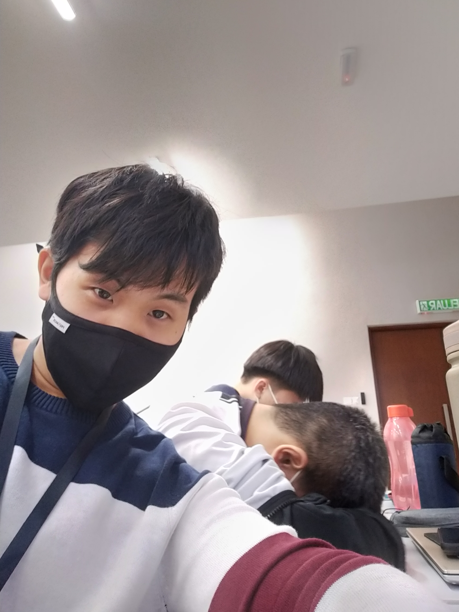

Tips and advises

How to choose what to study
by Pason Cheam Tung Huay
Here is a study tip from my own personal experience. You must know what to study as well as what not to study for each subject in the semester. This may seem counterintuitive but the time invested in studying something that is not even going to come out in an exam can be used to do more beneficial and productive activities. Some subjects in the semester, especially elective subjects emphasize heavily practical skills and applications rather than plainly memorizing facts and definitions. These subjects have exams that test your application skills rather than your memory. For instance, I have an Elementary Engineering Design course for my Year 1 Semester 1 Foundation as an elective course, and there is not a single test where we need to define or explain anything other than our project report and presentation. Our exams are all about drawing dimensions and designs only, other than understanding concepts and practicing drawing, there was no memorization needed. This is important because we can allocate more of our time to study more heavy subjects like physics and calculus with the extra time and memory we have. I made the grave mistake of memorizing the slides in the Elementary Engineering Design slides and wasted an ample amount of time without knowing that it will not come out in the exam, but just a way the lecturer wanted us to understand the material. Some practical advice from me is, always ask the lecturer whether the exams will be theoretical or practical based and whether it is necessary to memorize definitions. Knowing this can help us plan our study plan wisely and avoid wasting time on unnecessary information.
Be considerate in a conversation
by Kee Huai Shen
As an experienced extrovert, I have a few advice for any individual when it comes to communicating and interacting with someone else, especially strangers. It would be wise to not show your own intentions or hold on to your own opinions strongly when chatting or discussing matters with someone else, whether they are your classmates, seniors, or lecturers. It creates an unpleasant feeling for those who are also there to accept various advice and suggestions, and it proves that you have a strong ego. Next, when disagreeing with someone, it is highly recommended to not lose your cool and add constructive criticism upon the respective matter. They are your friends, someone who will be with you throughout the whole semester, there is no need to get angry over something as insignificant as different opinions. I placed disagreement problems higher than anything else as this is a major problem when it comes to discussing and cooperation, even during normal chatting sessions. I have met someone who is a senior that has a huge ego and becomes disrespectful to others just because they have different opinions, and that's a huge strike to your impression of others. The next, which is also the last, is to be considerate of the feelings of others when you are talking. It also has the same meaning as being respectful during your everyday interactions with others. Before starting a fact or making an unobvious joke, make sure your friends are understanding, or the fact itself does not bring more harm than good. It is the small details that slowly stack together and make a significant difference in life later on. Better be safe than sorry.
Ways to access study materials
Wong Min Jze
When you first get into University, there’ll be a lot of new things that you might not have experienced during your secondary school. Therefore, I’m here to share my experience after going to university for almost 5 months. Although 5 months might not be long enough, I'm sure that even a little experience of mine could also help you to adapt faster in university. The most obvious thing that you will first notice is the teaching system. During our secondary school, our school will provide us textbooks and exercise books. However, in university, you won’t get any textbooks from the lecturer. They usually will give you a file in the form of a pdf and that will be your study materials. These study materials are often compiled by the lecturer themselves and these could all be found in a textbook. The type of textbooks used vary from lecturer to lecturer. You could ask your lecturer for the source of the textbook or he will write it in a course manual. Due to the fact that the study materials are provided in the form of a pdf, I suggest you bring your own laptop when attending the lecture class. If you don’t have a laptop, you could print out the study material before the class. I don’t suggest this method as it is not that eco-friendly for the environment because it will waste lots of paper. For me, the best method is to invest in a tablet. Either Android tablet or iPad is a good way as long as they contain a digital pen or stylus that allows you to annotate on the screen. By doing so, you could decrease the weight of your bag because all of your study materials are in a slim tablet that is not too heavy. Besides, you could backup your files easily to cloud storage and then you could even access it through your phone or other device if you want to do so. Eventually, it all depends on your budget. If you currently cannot afford the price of a tablet, you could use the physical way which is print out the materials. This is not a bad method either, because some of the students prefer to write on paper. That’s my experience on the study materials in university.
Expand you social network
Nasreddine Iflah
I’m here as an international student to gives some advice for new student in university, joining a new country with a different culture may not be so easy without ignoring that 1st year in university is always the most difficult since it’s really different from high school, when I come here I didn’t know anyone in Malaysia no friend no tutor just on my own but hopefully I found a discord server how was created by foundation students actually this servers saves my student life, with the online mode it’s not easy to find friends or to ask for help and even if responsible on university are very professional it still easy to be lost, but this server helped me to find new friends ask for help in study, improving my English (yes mine is not so good but talking with people improve it), find groupmates how I’m sure the job will be done ( yes I got some bad experience with people that I was forced to be with them) and also things that aren’t related to study knowing the country better, having fun with friends. So If I can give you guys advice to find a group or server with students and share their experience and advice with others, that will be a big gain of time and energy.
Change your study environments
Nour Nader Nabil Salim
If you are someone who cannot bear the idea of studying indoors at the same exact spot every single time, then you are just like me, welcome to the club! During the first week of university, I did not know any places around and could barely get to my classroom on time and not get lost somewhere, but shortly after I got to know more places on campus. A great treasure that our university has is the library, which is located in block B. The library has a great atmosphere for studying thanks to the quietness and all. The library could be particularly useful when you are having gaps between your slots and do not know what to do. In case you are full and do not want to grab a meal between your lectures, the answer is always studying. Just grab your student ID, enter the library, choose the spot you like the most between the five levels that the library has, then set your area and you are good to go. You could also visit the library after you are done with all your classes and need to study or finish an assignment. It can also be very beneficial because it has books and materials that can help with your studies. Now, the issue here is that the library closes at 9 pm, so if you want to continue studying after that, here is a cool place that I did not know about. Most students call it the white room, because it is the only room that has the lights on after 9 pm at university, which can be a bit scary I know, but it is simply the room in block CA, located right after you exit the library. It is a room that is available all night long for students who wish to study there. I personally enjoy the atmosphere there and the quietness, sometimes even more than the library itself. You could even make a lot of friendships there with students studying different majors!